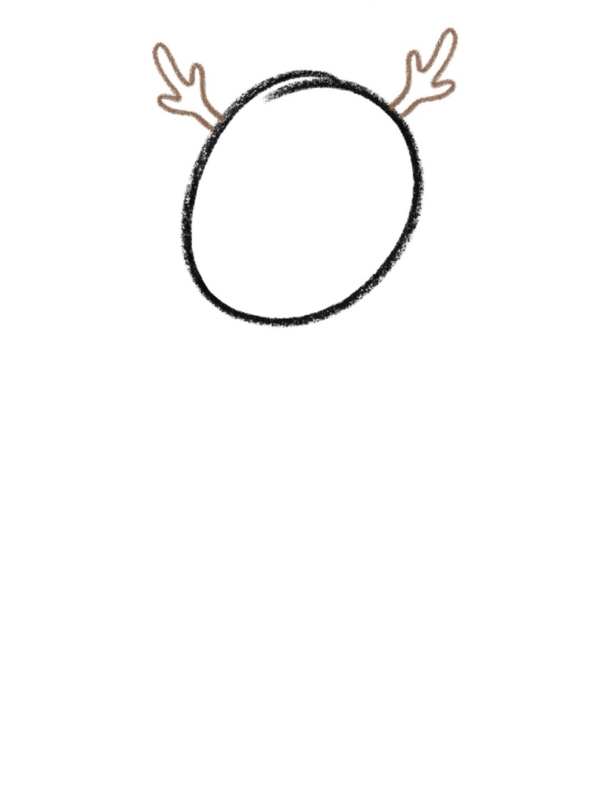
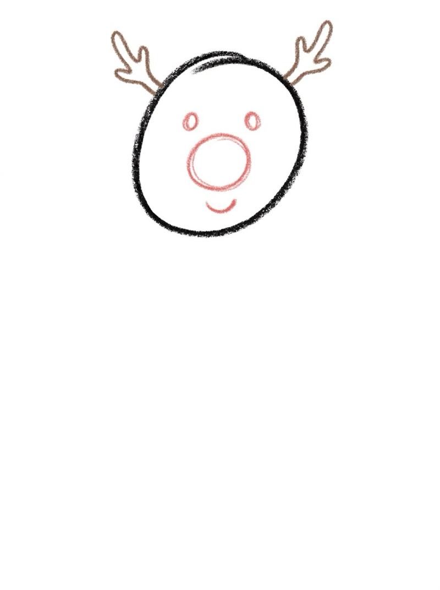
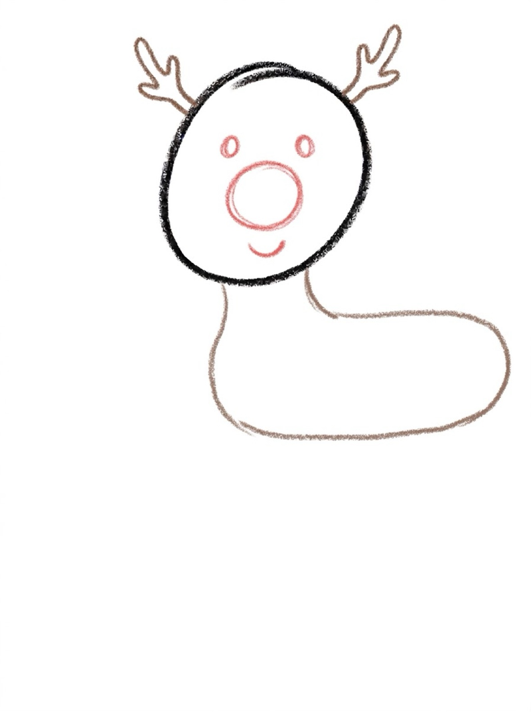
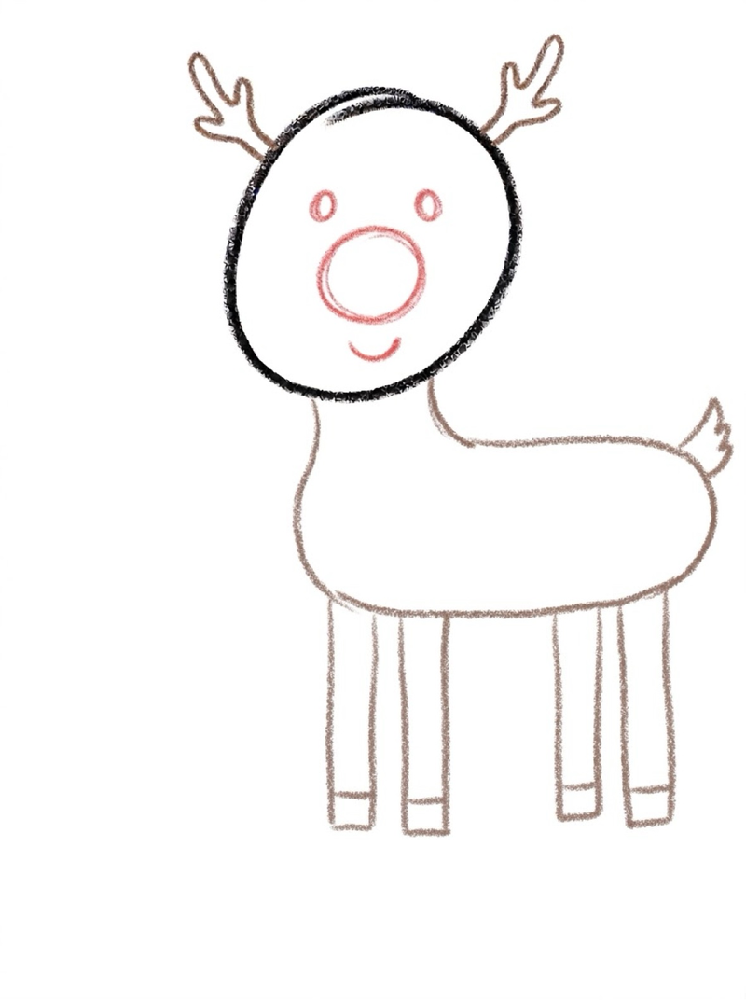

Reindeer Drawing for Kids How to Draw a Reindeer in 6 Easy Steps
Quick Answer
This free step-by-step tutorial shows kids how to draw a reindeer in six easy steps: an oval head, branching antlers, a friendly face with a red nose, a horse-like body, and four legs. Download the printable PDF, grab crayons, and follow along together. Made for ages 3 and up — no signup needed, just print and draw.
At a Glance
- Subject: How to draw a reindeer
- Ages: 3+
- Steps: 6 steps
- Time: ~20 min
- Difficulty: Easy
- Supplies: Paper, crayons
Every kid knows the most famous reindeer of all — and the red nose is the detail that makes this drawing instantly recognizable. The antlers look impressive but they're just branches, and kids love that the nose step feels like a reward at the end.
✏️ How to Draw a Reindeer: Step by Step
One step per box — draw each new part in a different color so kids can see exactly what changed.
Step 1: The Head

Draw an oval in the upper-left area of your paper. This is your reindeer's head, seen from the side. Leave room to the right for the body.
Step 2: The Antlers

Draw branching antlers on top of the head — a main branch with 2 or 3 smaller branches splitting off each side, like tiny trees.
Step 3: The Face

Add two dot eyes, a big round red nose in the middle, and a smile underneath. The red nose is what makes it a very special reindeer.
Step 4: The Body

Draw a long horizontal oval for the body — like a horse's torso, stretched out sideways. Connect it to the head with two short curved neck lines.
Step 5: The Legs and Tail

Add four legs under the body — two near the front, two near the back, like a horse standing. Add a short fluffy tail at the rear.
Step 6: Color It In

Color your reindeer! Brown body, tan antlers, and of course a bright red nose.
📊 Reindeer Drawing by Age
Every age can join in — just adjust the job.
| Age | What they can do | Tip |
|---|---|---|
| 3–4 | Trace the ovals and face on the printable | Draw the antlers for them — branches are tricky |
| 4–5 | Follow all 6 steps with a little help | The red nose is the reward — save it for last |
| 6+ | Draw solo and add their own details | Challenge: draw all nine reindeer in a line |
🖨️ Download Your Free Reindeer Drawing Printable
The printable lays out all 6 steps one per box, big enough for little hands — kids draw right alongside each step.
⬇️ Open Free Printable 🖨️ Print🎁 Free printable for ages 3+
🦌 Reindeer Games Challenge
Draw your reindeer, then draw a second one right next to it — but change one thing. Different antler shapes, a bigger nose, spots instead of plain. Comparing two drawings side by side builds observation skills, and kids love spotting the differences in their own work.
What You'll Need to Draw a Reindeer
Grab crayons or markers — brown for the body, a lighter tan for antlers, and red for the all-important nose. Black works for eyes and hooves. Standard printer paper is fine.
What They're Learning
This reindeer tutorial practices ovals in two sizes — comparing the small head oval to the big body oval teaches proportional thinking. The branching antlers are the trickiest part and build careful line control, since each branch has to connect. Placing the face features in the center of the oval builds spatial centering skills.
Make It Yours
Once the basic reindeer is done, try these twists: add white spots like a fawn, draw a bell on a collar around its neck, or give it a scarf for a winter look. Kids can also draw the whole sleigh team — nine reindeer gets crowded, so try three in a row. A snowy background with falling snow dots completes the scene.
🛒 Our Favorite Drawing Supplies
These are the supplies we reach for in our own home — washable (because kids), quality paper, and enough colors to avoid fights.
As an Amazon Associate, MomYouNeedThis earns from qualifying purchases — at no extra cost to you.
💡 Reindeer Drawing Tips for Parents
The reindeer body is the step that trips kids up — it's a long horizontal oval, like a horse lying sideways, not a round ball. If your child draws a circle, gently remind them: "reindeer bodies are long, like a horse." The antlers go on top of the head, angled outward like a V, with the bases touching the head. Antlers on the sides look like ears — on top, they look like antlers.
Two things that help with every reindeer drawing attempt: let them pick the colors (a blue reindeer is still a reindeer), and don't fix their drawing. If they ask for help, draw on a separate piece of paper, not on theirs. Kids who feel ownership of their drawing come back for the next one; kids who feel corrected stop trying. The goal is a reindeer they're proud of, not a perfect one.
❓ Reindeer Drawing FAQs
What is the easiest way for a kid to draw a reindeer?
Start with an oval for the head and add branching antlers on top. Give it dot eyes and a big red nose, then add a long horse-like body and four legs. Ovals and branches do all the work.
What age can kids start learning to draw a reindeer?
Most kids can follow the oval method around age 4 with a grown-up helping, and draw one on their own by ages 5 to 6. The antlers are the hardest part — grown-ups can help with those.
What supplies do we need to draw a reindeer?
Just paper and crayons or markers. The free printable PDF lays out all six steps one per box so kids can draw right alongside each step. Don't forget the red for the nose.
Is the reindeer drawing printable really free?
Yes — every printable on MomYouNeedThis is 100% free to download and print. No signup, no payment, just tap the download button.
How do I print the reindeer drawing tutorial?
Open the PDF and print at 100% scale (not 'fit to page') so the drawing boxes stay big enough for little hands. The printable is designed to stay large — never shrunk to force a fit.
📚 Keep Exploring
More free drawing tutorials and coloring pages made for little hands and busy parents.
✏️ All Drawing Tutorials